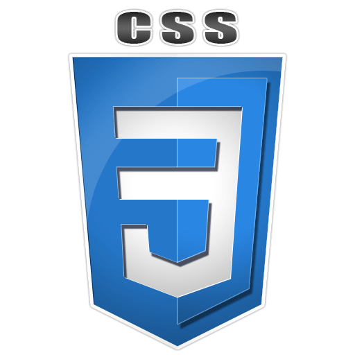

logo html

logo CSS
logo html
logo mapa
logo html
logo html
logo CSS
logo html
logo mapa
logo html
projeto curso HTML e CSS
Operando as tags de estruturas de texto de página web:
P- para paragrafos;
h1- para titulos;
br- para quebra de linha;
adicionar emoji: 🦊
ou pode ser adicionado dessa forma : 🦊 usando o parametro "&#x + o codigo do emoji".
Abaixo vc vai ver uma imagem que esta na mesma pasta do projeto da página. E vai aprender a manipular as imagens com Gimp..
Nesta frase, temos um Termo em destaque / , usando a tag Strong (semântica).
Nesta frase, tenho um termo em itálico usando a tag I (não semântico).
Nesta frase, temos um termo em ênfase usando a tag EM (semântico).
Podemos criar também um texto marcado usando a tag Mark.
Estamos criando um texto grande e um
Podemos marcar um texto como inserido para indicar ênfase e indicar que ele foi adicionado depois.
Existe também o sublinhado com a tag U (não semântico).
Para indicar coisas do tipo x20+3.
inserir coisas do tipo H2O.